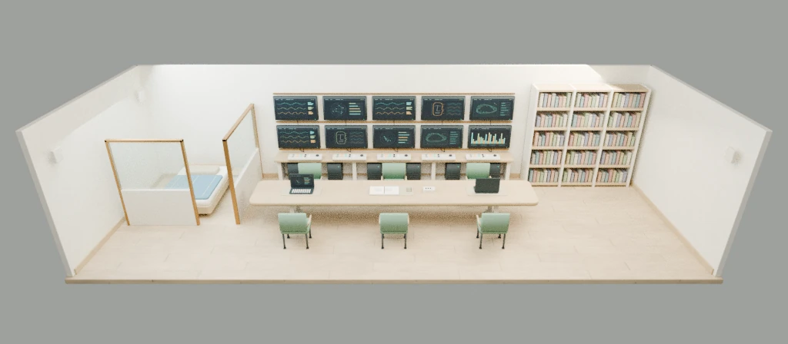
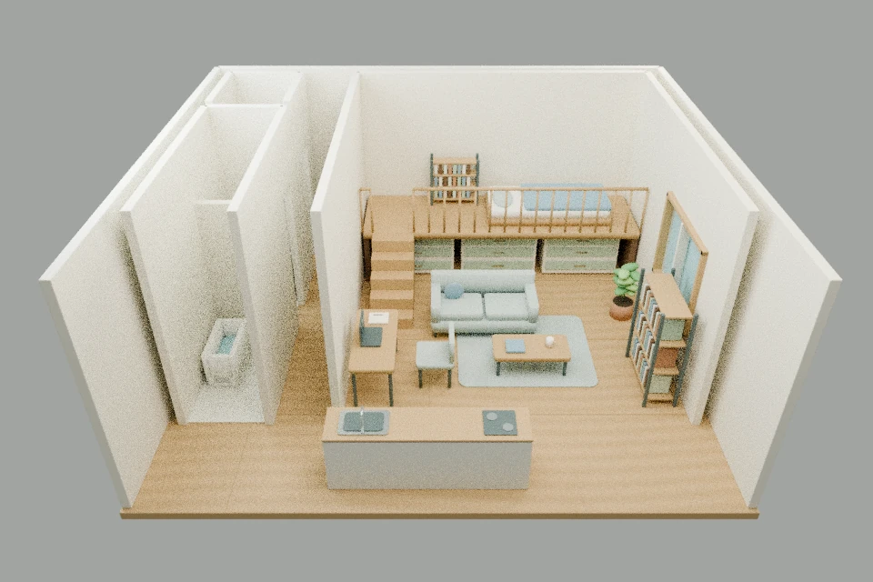
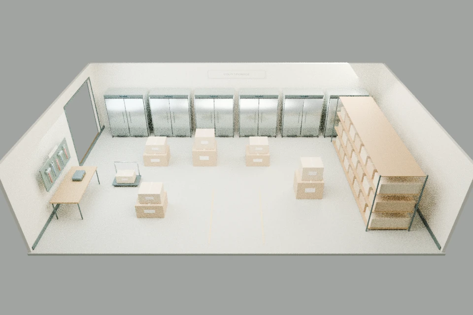
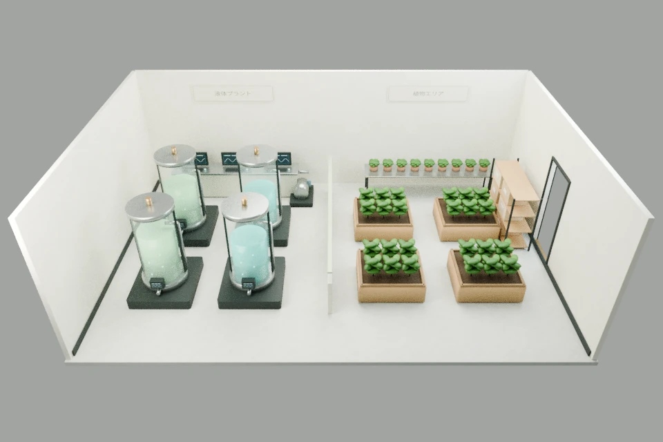
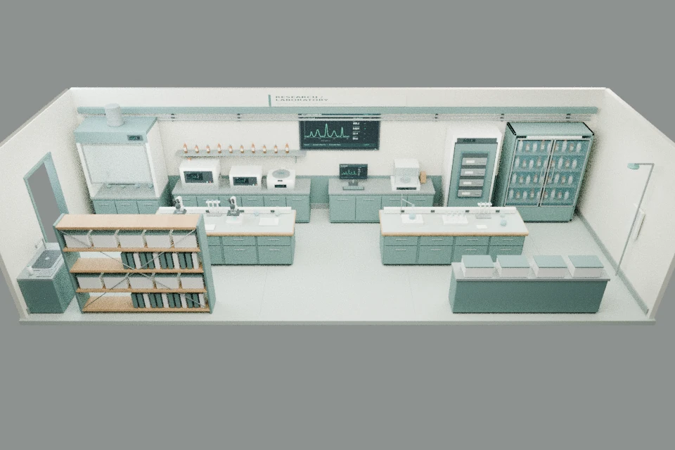
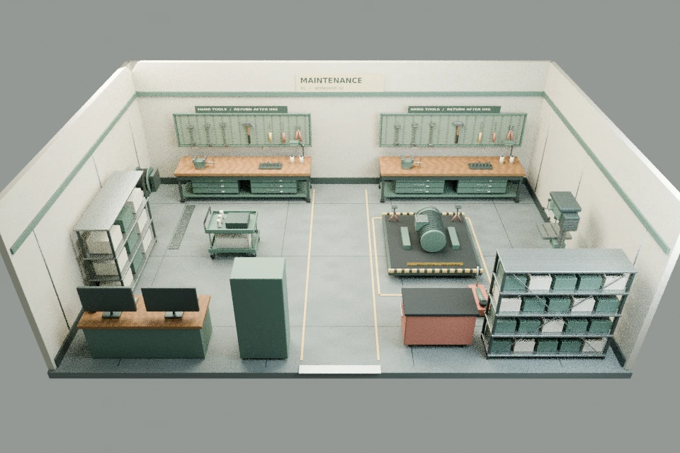
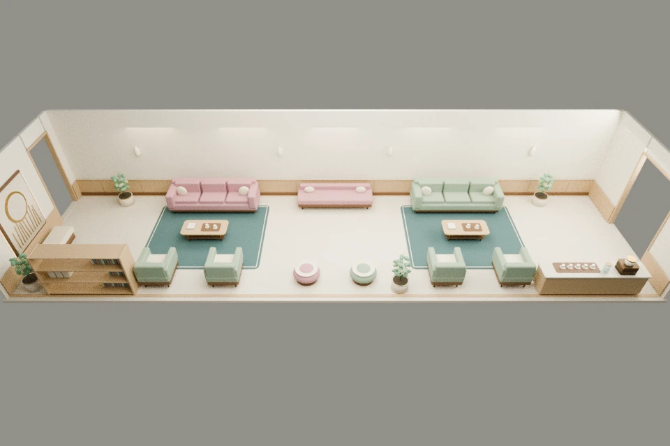
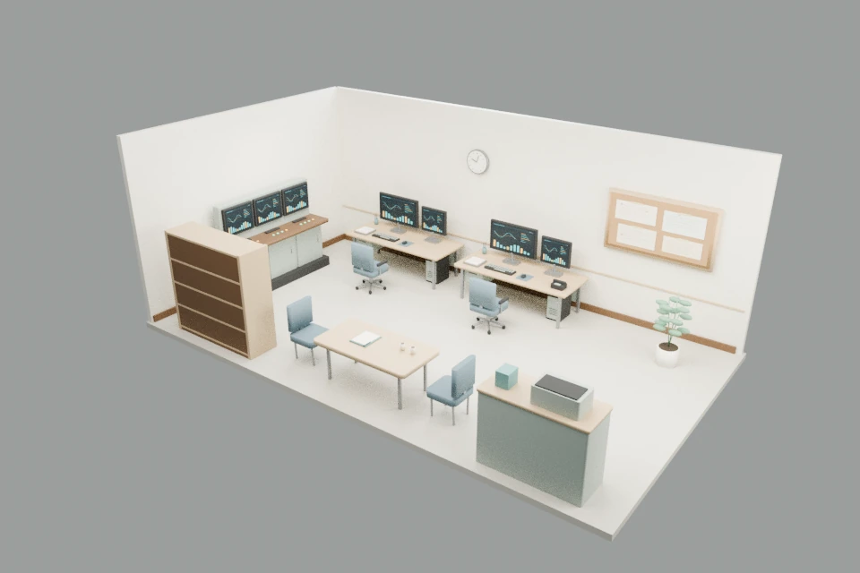

おこていゆハウスでの暮らし
研究の手が止まったら、ひと休み。暮らしの中には、発見のきっかけが隠れています。
おこていゆハウスは、ゲームのホーム画面です。冒険の準備や、のんびりとした暮らしの観測はここから。
研究とひと休み
おこていゆは、パソコンへ向かったり、部屋を歩き回ったりして過ごします。そのうち食事をしたり、ベッドで横になったり、椅子でくつろいだりすることも。
食べる・飲む・寝転がる・座るリラックス行動を1回完了するたび、穏やかポイントが1増えます。自動で始めた行動も、あなたが頼んだ行動も対象です。歩くことや研究だけでは増えないので、ひと休みを終えるまで見守りましょう。
穏やかポイントの使いみち
- パトロール：1ポイント消費。1以上で出発できます。
- 訓練：1ポイント消費。1以上で、対戦相手の条件も満たす難易度を選べます。
- ちょっかい：通常は3ポイント消費。3以上で選べます。戦闘後に帰宅した最初の1回は、ボーナスで消費しません。
パトロールは出発時、訓練は開始時にポイントを一度だけ使います。訓練所への移動だけでは使いません。途中で帰ったり、戦闘を終えて帰宅したりしても、残りの穏やかポイントは引き継ぎます。
食べ物を用意する
「食べ物を用意する」を選ぶと、おこていゆが冷蔵庫から食べ物や飲み物を取り出して楽しみます。ちゃぶ台にごはんがあると、自分から食べに行くこともあります。
食べたり飲んだりすると、食べ物や飲み物も少しずつ減っていきます。好きなベーコンを前にしたときの様子も、よく観察してみてください。
椅子とベッド
「椅子を掃除する」は、ロフト奥の椅子でくつろいでもらうきっかけになります。「ベットを綺麗にする」は、ベッドでひと休みしてもらうための選択肢です。
行動を頼んでも、今の動きを急にやめることはありません。食事や移動が落ち着いてから、できることを順に行います。
建物のマップをひらく
ホーム画面の左下にあるお部屋の地図をタップすると、おこていゆハウスがある建物のマップを見られます。階を切り替えたり、図の区画をタップしたりして、場所を確認してみましょう。
おこていゆの部屋は1F。2Fには、あなたの住まいがあります。地下には研究や支援のエリアと訓練所も。地図の配置は、全体のつながりを知るための概略です。
3Dエリアができた場所には、色付きの枠と「タップで移動」の目印があります。地図上のその場所をタップし、確認画面で「移動する」を選ぶと訪ねられます。地下1階の研究所・コンピュータ室・生産施設・整備施設、地下2階の訓練所・休憩室・管理室、2階のあなたの部屋、屋外の倉庫を訪ねられます。見学の移動には穏やかポイントを使いません。ほかのエリアは、今は案内を読むことができます。キッチンや水回りは、1Kのお部屋の図にまとめて描かれています。
コンピュータ室を見学する
地下1階のコンピュータ室は、横に長い大きなデスクと、たくさんのモニターが並ぶお部屋です。本がぎっしりの棚や、仕切りのある仮眠スペースもあります。入ったときは、入口からの視点になります。スワイプやドラッグで向きを変えて、お部屋を見回してみてね。いまは、お部屋の見学ができます。

あなたの部屋と支援施設を見学する
2階の「あなたの部屋」は、人間が暮らす1Kのお部屋です。ロフトのベッドやソファ、作業用のデスクが並んでいます。おこていゆのお部屋と、家具の大きさや置きかたを見比べてみてね。

倉庫
屋外の倉庫には、大きな冷蔵庫と、物資を積んだパレットや収納棚が並びます。段ボール箱や収納ケース、袋物もたっぷり。入口から見回して、工具台や蓄えを眺めてみてね。

生産施設
地下1階の生産施設には、植物を育てるプランターの区画と、液体を扱うバイオプラントの区画があります。いまは、設備の見学ができます。

研究所
地下1階の研究所には、顕微鏡や試料を置いた実験台と、分析機器が並んでいます。棚や保管庫、奥のカウンターも見回してみましょう。いまは、設備の見学ができます。

整備施設
地下1階の整備施設には、工具をそろえた作業台や部品の棚、整備用の台が並んでいます。診断用の画面や、移動式のカートもあります。いまは、設備の見学ができます。

休憩室
地下2階には、招待した珍生物と施設作業員が一緒にくつろぐ休憩室があります。閉じ込める場所ではなく、みんなを迎えるラウンジです。柔らかなソファやラグ、お茶のテーブルが並ぶ、あたたかな空間です。飲み物の台には、給湯用のシンクも備えています。木や布の質感も、入口からのんびり眺めてみてね。いまは、お部屋の見学ができます。

管理室
地下2階の管理室は、管理人が住み込み、2人ほどで使うお部屋です。仕事をする2席と、ベッドや衣類収納のある生活スペースを分けています。食事やひと休みに使う小さなテーブルもあるので、お仕事と暮らしの場所を見比べてみてね。いまは、お部屋の見学ができます。

どのお部屋も、入ったら入口からスワイプやドラッグで見回せます。左下の地図をタップすると、ほかのお部屋へ移動できます。
追従モード
家に入ったときは、入口からおこていゆを見守る追従モードです。おこていゆが部屋を移動すると、見やすいようにカメラの向きや距離も変わります。
自分でカメラを動かさずに、暮らしの様子をのんびり眺めたいときに向いています。
ビューイングモード
ビュー右上のボタンから、ビューイングモードへ切り替えられます。ドラッグして見回し、ピンチやマウスのホイールで拡大・縮小してみましょう。
入口を中心に、部屋の家具やロフトを眺められます。見たい場所を探したら、追従モードへ戻すこともできます。
詳細観測モード
おこていゆやモアイくん、気になる家具をタップすると、近くから眺める詳細観測モードになります。家具によっては、その場所についてのナレーションも読めます。
おこていゆを観測すると、今の成長や強さ、装備も確認できます。元の見かたへ戻るときは、ビューのどこかをタップするか、左上の「戻る」を押してください。
ちょっかいをかける
おこていゆハウスで「ちょっかいをかける」を選ぶと、怒りポイントが1増えます。通常は穏やかポイントが3以上必要で、選ぶと3消費します。ゲーム起動直後やセーブデータを読み込んだ直後も、この条件は同じです。
パトロールや訓練で戦闘を終えて帰宅すると、結果にかかわらず最初の1回がボーナスになります。ボタンに「ボーナス」と表示されている間は、穏やかポイントが3未満でも選べ、ポイントを消費しません。拡大表示などで文字が収まらないときは、「ボーナス」の文字に代わって、黄色寄りのボタンと枠が目印になります。使うと表示は消え、メッセージでも穏やかポイントを消費しなかったことを案内します。その後は穏やかポイントを3ためるか、次の戦闘後のボーナスを待ちましょう。
戦わずにパトロールを中断して戻った場合や、ゲームを再起動・セーブデータを読み込みした場合に、ボーナスは付きません。
ちょっかいのあとも、食事・椅子・ベッドの指示は使えます。穏やかポイントが足りなくなったら、ひと休みの様子を見守りましょう。
おこていゆイベント
怒りポイントが3溜まるたびに、おこていゆイベントが起こります。静かに近づいてきたら、そのひとことにも注目してみてください。
入手・レベルアップの候補
- スーパーおこていゆ状態
- パンチ
- エネルギーレイ
- 溜めパンチ
- 溜めエネルギーレイ
- エネルギーパンチ
- ヴォイドウェーブ
- コスモスウェーブ
- カオスウェーブ
この中から1つが選ばれます。未習得の技なら覚え、取得済みの技や状態ならレベルが1上がります。パンチとスーパーおこていゆ状態は最初から使えるので、当たるとレベルアップします。
最大レベルまで育ったものは候補から外れます。すべて育ちきっていると、新たな取得やレベルアップは起こりません。各候補の特徴は「技と成長」で紹介しています。
お出かけの前に
パトロールや訓練には穏やかポイントを使います。選べないときは、食事や休息を見守りながら準備を整えましょう。
覚えた技や手に入れたもちものは、コレクションで準備できます。少し違う組み合わせを試すと、おこていゆの得意な戦いかたが見えてくるかもしれません。